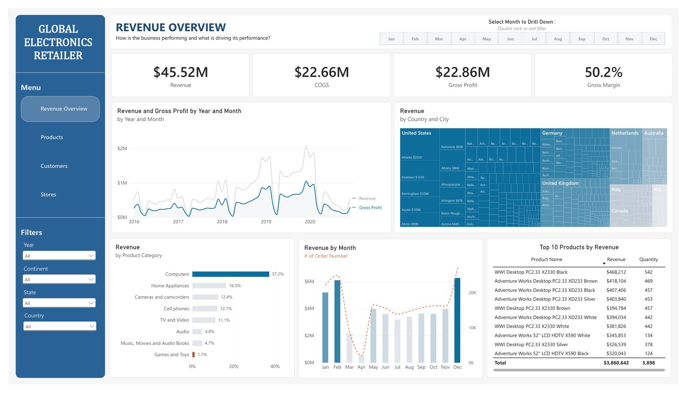

Featured
Global Electronics Retailer Power BI Dashboard
An end to end build. Raw CSV and Excel exports turned into a star schema semantic model with DAX measures, then surfaced as a four page interactive report covering revenue, products, customers and stores. A shared filter panel and a click to drill month selector let any view be sliced to a single country, category or month in a couple of clicks.
Power BIDAXData ModellingExcel
View the full project
62,884order lines modelled, 2016 to 2021
50.2%blended gross margin surfaced
66 stores, 8 countriescovered in one filterable model